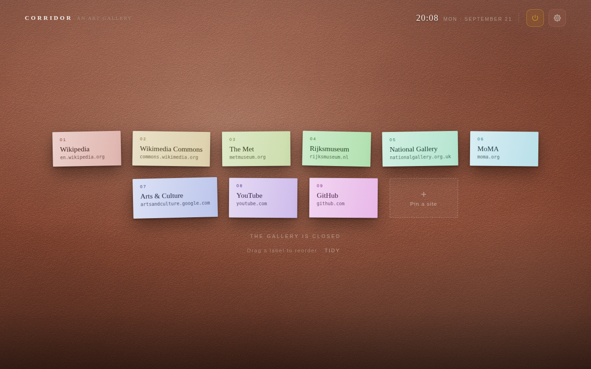
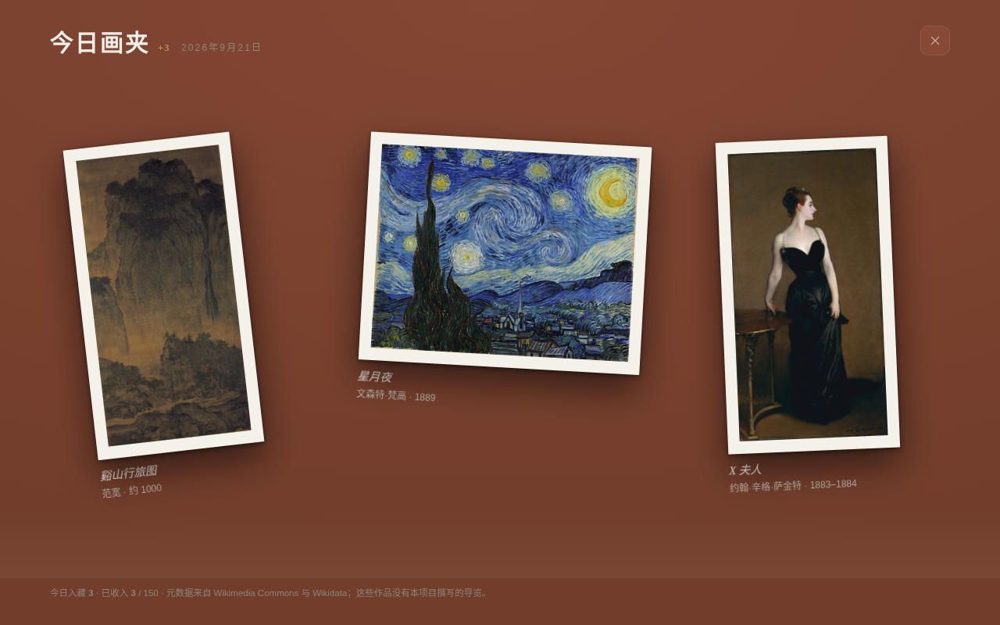

106 幅公有领域杰作 · 默认展出 93 幅106 public-domain masterpieces · 93 on show by default
长 廊Corridor
打开新标签页，看见一幅画。 Open a new tab. See a work of art.

美术馆展墙 · 乌木金线画框 · 卡纸留白 · 陶土红墙面 Gallery Wall · ebony-and-gilt frame · card mount · terracotta wall
一分钟看懂See it in motion
九十秒，走一遍长廊Ninety seconds in the Corridor
就在这一页里播放。点播放之后才从 YouTube（youtube-nocookie.com）加载，之前这一页不连 YouTube。 It plays right here on the page. The player loads from YouTube (youtube-nocookie.com) only when you press play; until then this page makes no request to YouTube.
这是什么What it is
把新标签页
变成一面安静的展墙
A quiet museum wall
where your new tab was
「长廊 Corridor」把 Chrome 的新标签页变成一面安静的美术馆展墙。106 幅公有领域杰作，从《千里江山图》到《星月夜》，在桌面与你相伴。你可以欣赏名作、了解艺术，也可以挂上自己和家人的照片与作品，让熟悉的瞬间重新回到眼前。
每一幅都配了为这个项目原创撰写的导览。办公模式默认开着，含裸体的 13 幅不参与轮换，所以装上先看到的是 93 幅——藏品库里它们仍在，关掉办公模式就全都来。
没有项目服务器，没有账号，没有一行统计代码。
Corridor turns Chrome's new tab page into a quiet museum wall. It comes with 106 public-domain masterpieces, from A Thousand Li of Rivers and Mountains to The Starry Night. Discover great works, learn a little more about art, or hang your own photos and creations on the wall — bringing familiar moments back into view.
Every work carries a curated note written for this project. Work-safe mode is on by default, keeping the 13 works with nudity out of the rotation — so a fresh install shows 93. They stay in the library, and turning the mode off brings them all back.
No project server, no account, not one line of analytics.
它能做什么What it does
每一处都能拧Every part of the wall, adjustable
五种呈现方式Five viewing modes
展墙 · 沉浸式 · 瀑布流 · 环形长廊 · 胶卷Gallery Wall · Immersive · Masonry · Circular Gallery · Filmstrip
11 种画框11 frame styles
依据真实线脚制作，以离线光照渲染呈现，不是简单贴图Modeled from real mouldings and rendered with offline lighting rather than flat textures
留白与卡纸Matting
5 种留白方式：油画配亚麻内衬，纸本配卡纸，「随画框」自动选择5 matting options, including linen liners for paintings, paper mats, and automatic frame-aware matching
墙色与材质Walls
15 种墙面颜色，并支持自定义色板，饱和度与色温也可微调；31 种墙面材质，从展墙、织物包墙到石材与金属背景板15 preset wall colors plus full custom color control; 31 wall materials, from gallery finishes and fabric walls to stone and metal panels
射灯Spotlights
可调数量、亮度、方向与冷暖；角度变化，投影与受光也会随之改变Number, brightness, direction and color temperature — shadows and highlights respond as the light changes
随画取色Color from the artwork
自动读取作品的六个主色，排成一条色卡，点一下复制色号；展签与按钮的点缀色也随画而变Each work's six main colors are read automatically and laid out as a swatch strip — click one to copy it; the label and buttons pick up the artwork's accent
办一个自己的画展Curate your own exhibition
添加本机文件夹或在线图库，挂上旅行图册、家庭欢乐时光、爸妈的旧照片、孩子画的宇宙；每个来源各带一套筛选Add local folders or online galleries and hang travel journals, family memories, old photos of your parents, your child's drawings — each source with its own filters
双语展签Bilingual labels
展签轻点即可翻面：正面母语，背面外语，像一张藏在画边的语言闪卡；作品详情页也能单独切换语言Tap the label to flip it: your primary language on the front, your second on the back — like a flashcard tucked beside the artwork. The details page switches language on its own too
AI 辅助Optional AI assistance
可选、默认关闭。支持 OpenAI、Anthropic 兼容接口，以及 Ollama、LM Studio 等本地模型；可补全作品信息，把界面与导览扩展至 78 种语言中的任意两种Optional, off by default. OpenAI- and Anthropic-compatible APIs, or local models through Ollama and LM Studio, can complete artwork information and extend the interface and notes to any two of 78 languages
今日画夹Today's Selection
每天从 Wikimedia Commons 遇见几幅新作品，让藏品持续生长；每日数量可自定义A few new public-domain works from Wikimedia Commons each day, so the collection keeps growing — you set how many
藏品库Library
全部 · 收藏夹 · 浏览历史 · 每日新作，按流派、国家地区、题材、色系筛选，也能直接搜All works, favorites, history and daily arrivals, filtered by movement, country, subject or color, or simply searched
去除Remove Artwork
不想再遇见的画可以拿下墙，五秒内可撤销，设置里随时恢复Take a work you'd rather not meet again off the wall — five seconds to undo, and restore it from settings any time
暂歇Pause Gallery
按 Q 一键收起画廊，回到常用站点：固定的站点、Chrome 常访问、当前打开的标签页；三种呈现方式，支持拖拽整理Press Q to step out of the gallery and return to your usual sites — pinned sites, Chrome's most visited and the tabs you have open — in three layouts you can rearrange by dragging
备份与恢复Backup & restore
设置、收藏与接口配置整份导出成 .json，换机器或重装后导回来；API 密钥可不导出、明文或口令加密Settings, favorites and API configuration export to one .json file and come back after a reinstall; API keys can be left out, kept in plain text or protected with a passphrase
离线与隐私Offline and private
没有项目服务器、没有账号、没有统计代码；已缓存的作品断网照样看No project server, no account, no analytics — and cached works stay viewable offline
快捷键Keyboard
右下角的键盘按钮，鼠标移上去就能看到全部键位。Hover the keyboard button at the bottom right to see them all.
办一个自己的画展Curate your own exhibition
旅行图册、家庭欢乐时光、爸妈的旧照片、孩子画的宇宙……添加本机文件夹或在线图库，它们就和名作挂在同一面墙上。本机的图片不复制、不上传，只在展示时读取。 Travel journals, family memories, old photos of your parents, your child's drawings — add a local folder or an online gallery and they hang on the same wall as the masterpieces. Local images are never copied or uploaded; they are read only when shown.
呈现方式The rooms
同一批画，五种挂法Same paintings, five different rooms




安装Install
两分钟，装上就能用Two minutes, no build step
Chrome 网上应用店：点这里安装，装完打开新标签页即可。也可以照下面的步骤用开发者模式加载。 Chrome Web Store: install it here — then open a new tab. Loading it unpacked, below, gives you the same thing.
界面语言跟着浏览器：中文浏览器显示中文，其他语言一律显示英文。想换，按 S → 呈现 → 语言 · 时钟。The interface follows your browser's language: English, or Chinese if your browser is set to Chinese. To change it, press S → Display → Language · Clock.
git clone https://github.com/yearnst/corridor-newtab.git- 打开 Chrome，地址栏输入
chrome://extensions/回车Open Chrome and go tochrome://extensions/ - 右上角打开开发者模式Turn on Developer mode, top right
- 点加载已解压的扩展程序Click Load unpacked
- 选仓库里的
corridor-newtab/文件夹（含manifest.json的那一层）Choose thecorridor-newtab/folder inside the repo (the one holdingmanifest.json) - 打开一个新标签页Open a new tab
Edge / Brave / Arc 等 Chromium 内核浏览器同样适用，需要 Chrome 110 及以上。没有构建步骤，没有依赖，没有 node_modules。 Edge, Brave, Arc and other Chromium browsers work too; Chrome 110 or newer. No build step, no dependencies, no node_modules.
隐私Privacy
主动发出的请求只有三类，且都可关Three kinds of request, all of them optional
- 向
upload.wikimedia.org取画作图片Fetching artwork images fromupload.wikimedia.org - 向
commons.wikimedia.org/www.wikidata.org查每日新作的元数据Looking up metadata for the daily arrivals oncommons.wikimedia.organdwww.wikidata.org - 向你自己填写的那个地址发 AI 请求或取在线图库——不填就一个请求都不发AI or image-source requests to the endpoint you typed in yourself — leave it blank and not one request is made
没有项目服务器、没有账号、没有统计代码。设置、收藏与缓存保存在本机，已缓存的作品可离线浏览。API 密钥只发送到你自己填写的接口地址。自定义图库中的本机图片不复制、不上传，仅在展示时读取。 No project server, no account, no analytics. Settings, favorites and cached images stay on your device, and cached works remain available offline. API keys are sent only to the endpoint you provide. Images from local galleries are never copied or uploaded and are read only when displayed.
暂歇要读常访问站点和打开的标签页，用的是两个可选权限：开启那一项时才问你，随时能撤回。读到的只有站点名和网址，不离开这台电脑；这一屏也不发任何网络请求。 Pause Gallery can read Chrome's most-visited list and your open tabs through two optional permissions, asked for only when you turn that source on and revocable any time. It sees only site names and addresses, keeps them on your machine, and the page itself makes no network requests.
图片来源与许可Credits & license
画是公有领域的，字是自己写的Public-domain paintings, original notes
作品图片全部来自 Wikimedia Commons 的公有领域高清扫描，每幅的来源与收藏地记录在 data/catalog.json 里。这些图片不受本仓库许可证约束。
导览文字是为这个项目原创撰写的，不是从百科抄的，与代码同样适用 MIT License。
Every image is a public-domain scan from Wikimedia Commons; the source and collection of each is recorded in data/catalog.json. Those images are not covered by this repository's license.
The curated notes were written for this project — not lifted from an encyclopedia — and are MIT licensed along with the code.